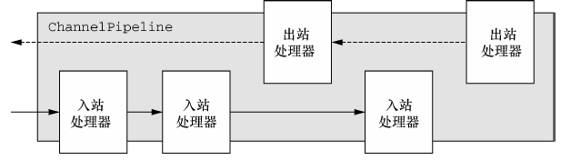
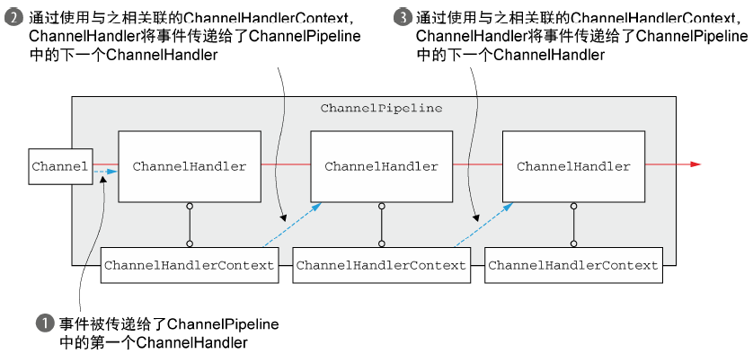

netty介绍
1. 简介
netty 是一款事件驱动的异步网络框架， 是对 Java NIO 的封装，用于快速开发高性能、高可靠的网络服务器和客户端，在大量中间件例如 Dubbo、RocketMQ 中得到广泛应用。
上文 Java NIO 对 NIO 进行了介绍，NIO 存在以下问题：
- 类库和 API 繁琐，上手难度高；
- 需要熟悉多线程编程；
- 存在 epoll 空轮询 bug。
Netty 对 NIO 进行了封装，简单易用，并且内置了多种编解码器，支持多种协议，可用于快速开发。
2. ByteBuf
2.1 介绍
ByteBuffer 是 NIO 中网络的数据容器，但这个类使用繁琐复杂，netty 中的替代品是 ByteBuf。ByteBuf 拥有以下优势：
- 内置零拷贝
- 容量可以按需增长
- 同时具有读模式和写模式，不需要进行转换
2.2 分配
与 ByteBuffer 类似，ByteBuf 可在堆中分配，也可在直接内存分配。
为了降低内存分配和释放的开销，netty 使用 PooledByteBufAllocator 实现了池化，并且基于引用计数实现内存回收，其主要 API 如下：
buffer(int initialCapacity)：返回一个基于堆或直接内存的ByteBufheapBuffer(int initialCapacity)：返回一个基于堆内存的ByteBufdirectBuffer(int initialCapacity)：返回一个直接内存的ByteBuf
3. ChannelHandler
3.1 ChannelHandler
对于开发人员而言， netty 最重要的组件的 ChannelHandler，它充当了入站和出战数据的处理器。
其中 ChannelInboundHandler 处理入站数据，ChannelOutboundHandler 处理出战数据。
3.2 ChannelPipeline
ChannelPipeline 是一个 ChannelHandler 实例链，使用了责任链设计模式。。如果一个入站
事件被触发，它将被从 ChannelPipeline 的头部开始一直被传播到尾端。

3.3 ChannelHandlerContext
ChannelHandlerContext 代表了ChannelHandler 和 ChannelPipeline 之间的关
联，每当有 ChannelHandler 添加到 ChannelPipeline 中时，都会创建 ChannelHandler-
Context。ChannelHandlerContext 的主要功能是管理它所关联的 ChannelHandler 和在
同一个 ChannelPipeline 中的其他 ChannelHandler 之间的交互。

最主要使用的方法是 writeAndFlush，将数据写入刷新并经过 ChannelPipeline。
4. EventLoop
EventLoop 是 netty 中的事件机制，一个 EventLoop 由一个 Thread 驱动，同时 Runnable 或者 Callable 任务可以直接交给 EventLoop 是实现，立即执行或者调度执行。
5. 优化
5.1 粘包问题
由于 TCP 是面向流的，消息是无边界的，接收缓冲区可能得到多个包或者不完整的包，需要在应用层对包进行区分。
有三种实现方式：
- 固定长度：即每个包都是固定长度的，每次读取固定长度解析，netty 中提供了
FixedLengthFrameDecoder作为实现。优点是实现简单，缺点是造成空间浪费，不推荐使用。 - 分割符：利用分割符对包进行区分，netty 中提供了
DelimiterBasedFrameDecoder作为实现。优点是实现比较简单， 也没有空间浪费，缺点是当内容出现分割符需要进行转义，推荐使用。 - 自定义格式：通常使用 长度 + 内容 的方式，netty 中提供了
LengthFieldBasedFrameDecoder作为实现。优点是空间紧凑，但需要自定义协议，实现较为复杂。
5.2 keepalive
在对方服务不可用或者网络连接故障时，如果未关闭连接，会浪费资源。 TCP 层有 keepalive 机制，但需要 2 小时以上才能判断连接失效，耗时过长，在服务器应用需要自行实现 keepalive 机制。
Idle 监测是一种检测机制，会固定时间发送询问机制，测试对端服务是否正常。当发生 Idle
之后，才发生 keepalive。